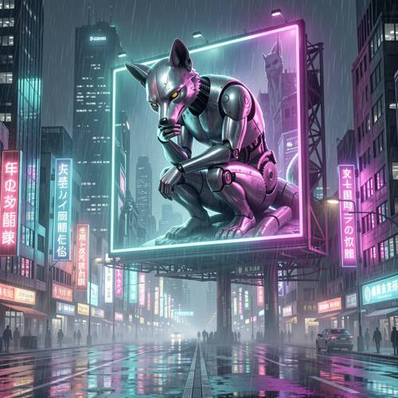
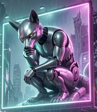

World Knowledge — In a Cyberpunk-style rainy night city, a mechanical fox is squatting o
In a Cyberpunk-style rainy night city, a mechanical fox is squatting on a huge billboard. It looks confused and looks like a thinker for Rodin.


Judge — Direct
- PASSWorld Knowledge — The mechanical fox is depicted in a squatting, contemplative pose that alludes to the famous sculpture 'The Thinker' by Rodin through its pensive posture, although the specific seated, chin-on-hand pose of the sculpture is not replicated.
- PASSStyle — The image features a futuristic city at night with towering skyscrapers, abundant glowing neon signs with non-English characters, visible rain, and a flying vehicle in the sky. This collection of visual elements is characteristic of the Cyberpunk style.
- FAILAttribute - Expression — The mechanical fox has a forward-facing gaze with wide, glowing green eyes and slightly lowered mechanical brows. The facial expression appears intense or pensive rather than clearly confused.
- PASSRelationship - Similarity — The mechanical fox's posture—squatting on a high perch with its forelimbs resting on its legs in a pensive manner—creates a visual similarity to the contemplative stance of Rodin's 'The Thinker' sculpture.
- PASSGrammar - Pronoun Reference — The image correctly identifies the subject of the pronoun 'It' as the mechanical fox, depicting this single entity with the characteristics described in the prompt, such as squatting on a billboard and holding a specific pose.
Judge — Continuum
- PASSWorld Knowledge — The mechanical fox is depicted in a pose that is a direct visual reference to Auguste Rodin's famous sculpture, 'The Thinker'. It is in a squatting position with its chin resting on its hand, a posture synonymous with the sculpture.
- PASSStyle — The image successfully embodies the Cyberpunk style. It portrays a city at night during a rainstorm, with wet streets reflecting the glow of numerous neon signs written in what appears to be Japanese. The scene is filled with skyscrapers and a generally futuristic, high-tech atmosphere.
- PASSAttribute - Expression — The mechanical fox has a downward gaze and its head is propped up by its hand on its chin. This pose, combined with the context, conveys an expression of deep thought or puzzlement, which aligns with the description of looking 'confused'.
- PASSRelationship - Similarity — There is a clear visual similarity between the pose of the mechanical fox and Rodin's 'The Thinker'. The fox is hunched over in a squat, with its elbow resting on its knee and its hand supporting its chin, directly mimicking the iconic pose of the sculpture.
- PASSGrammar - Pronoun Reference — The pronoun 'It' in the prompt refers to the 'mechanical fox'. The image correctly shows the mechanical fox as the subject that is in the pose of 'The Thinker' and looks confused, accurately applying the pronoun reference.
What the agent did
Thinking
User's request: a rainy-night cyberpunk-style city, a mechanical fox crouching on top of a giant billboard, with a confused expression — "looks like Rodin's thinker" — in other words, a contemplative pose like Rodin's "The Thinker" (hand on chin, elbow on knee, hunched, deep in thought). Let's generate the image with flux2-klein. Let's write a detailed prompt: rainy-night cyberpunk city, neon lights, reflections, a mechanical/robotic fox crouching on top of a giant billboard, in a pensive pose like Rodin's "The Thinker" — one hand (forepaw) supporting the chin, elbow propped on the knee, leaning forward, head tilted, confused/pensive expression. Rain streaks, glowing neon signs, atmospheric. Generate at an appropriate size, probably 1024x1024, or portrait? A city with a billboard — maybe portrait or square. Let's go with a square 1024x1024, or portrait 832x1216 to emphasize the height of the city. According to the policy, size is fixed by the harness; the default 1024x1024 is probably fine. Actually, let's go with the default. Alright, let's generate.
Step 1 — `generate_image`
{
"prompt": "Cyberpunk rainy night city, neon-drenched skyscrapers, wet reflective streets, heavy rain streaks glowing in neon light. On top of a huge glowing billboard above the city, a mechanical robotic fox with polished metal and exposed gears squats in a pensive pose like Rodin's The Thinker: hunched forward, one paw resting on its chin, elbow on knee, head tilted, ears flopped, a confused contemplative expression. Cinematic dramatic lighting, neon cyan and magenta rim light, atmospheric haze, high detail, photorealistic 3D render style.",
"model": "flux2-klein"
}Result img_0
Thinking
The image turned out great. Let's check the details: - Cyberpunk-style rainy night city ✓ (rain, neon, wet streets) - Mechanical fox ✓ (metal fox with gears, glowing eyes) - Crouching on top of a giant billboard ✓ (on the billboard, in a crouching pose) - Confused/contemplative expression ✓ — resting chin on paw, hunched over, looks like "The Thinker" Let me inspect the fox's pose and face in more detail to check whether it's really in a "thinker" pose and whether the face looks confused/contemplative. I'll try zooming in on the fox.
Model
The first generation looks promising. Let me inspect the fox's pose and face up close to verify the "thinker" details before marking it.
Step 2 — `inspect_region`
{
"image": "img_0",
"roi": "the mechanical fox",
"padding": 0.1
}Result img_1

Thinking
The crop results confirmed the following: - The mechanical fox is crouching on top of a billboard - One paw (forepaw) is placed on the chin/mouth area — classic "The Thinker" pose - Hunched forward, looking pensive and slightly confused - Rain, neon-lit cyberpunk city Everything matches the prompt. The pose is exactly like Rodin's "The Thinker" — elbow propped up, paw on chin, looking down. The expression is a contemplative, somewhat confused look. This is a very good result. I'll mark it as the best. I could consider fine-tuning the "confused" aspect, but the current image already conveys a pensive, puzzled vibe through the downward gaze and the furrowed brow area. The image is high quality and matches all the requirements. I'll mark img_0 as the best and stop — good enough is a reason to stop.
Model
I've confirmed via the cropped image that the details are fine. The mechanical fox is clearly in a pensive "thinker" pose. It has its paw propped up against its chin, its body hunched forward with its elbow resting on its knee, its gaze directed downward, and a furrowed, puzzled brow. The rainy neon-lit cyberpunk city and the giant glowing billboard are also all in place. Every element of the prompt is satisfied, and the image is high quality.
Step 3 — `mark_best`
{
"image": "img_0",
"reason": "All requested elements present and verified by close inspection: rainy neon cyberpunk city, mechanical fox squatting on a huge billboard in a confused pensive \"The Thinker\" pose (paw on chin, hunched forward)."
}Thinking
Done. The image has been marked. Let me give the user a final summary.
Model
Done! The image is complete and marked as the best result. **What it contains:** - **Cyberpunk rainy night city** — neon-drenched skyscrapers, heavy rain streaks, wet streets with glowing reflections, and vertical neon signage in a dense Asian megacity - **Mechanical fox** — a polished silver/steel robotic fox with exposed gears, glowing amber eyes, and articulated limbs - **Squatting on a huge billboard** — the fox perches atop a giant glowing billboard screen that dominates the city block - **"The Thinker" pose** — hunched forward with one paw resting on its chin, elbow braced on its knee, head tilted with a furrowed, puzzled expression, just like Rodin's contemplative figure The close-up inspection confirmed the pose and expression read exactly as intended — a confused, deep-in-thought mechanical fox overlooking the neon rain below.